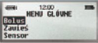
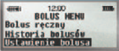
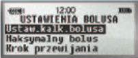
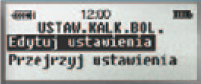
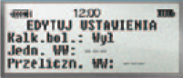
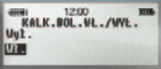

Poniżej przedstawiamy instrukcję,
w jaki sposób zaprogramować w pompie insulinowej
Kalkulator Bolusa, aby móc wykorzystywać tę funkcję do obliczania insuliny potrzebnej na posiłek i korektę. Prosimy postępować
zgodnie z instrukcjami, korzystając
ze zdjęć ekranu pompy.
Krok 1
W menu GŁÓWNYM wybierz "Bolus" i
naciśnij ACT.

Krok 2
W menu BOLUS wybierz "Ustawienie
bolusa" i naciśnij ACT.

Krok 3
W menu USTAWIENIE BOLUSA wybierz
"Ustaw.kalk.bolusa" i nacisnij ACT.

Krok 4
W menu USTAW. KALK. BOLUSA
wybierz "Edytuj ustawienia" i
naciśnij ACT.

Krok 5
W menu "EDYTUJ USTAWIENIA"
wybierz "Kalk.bol." i naciśnij ACT.

Krok 6
W menu KALK. BOL. WŁ./WYŁ. wybierz
"Wł." i naciśnij ACT.
Następnie wprowadź
informacje dotyczące wszystkich
wymaganych parametrów: Jednostki
węglowodanów w gramach lub WW,
Przelicznik węglowodanów, Jednostki GLU
w mg/dl lub mmol/l, Wrażliwość, Wartość
docelowa GLU, Czas aktywności insuliny.
